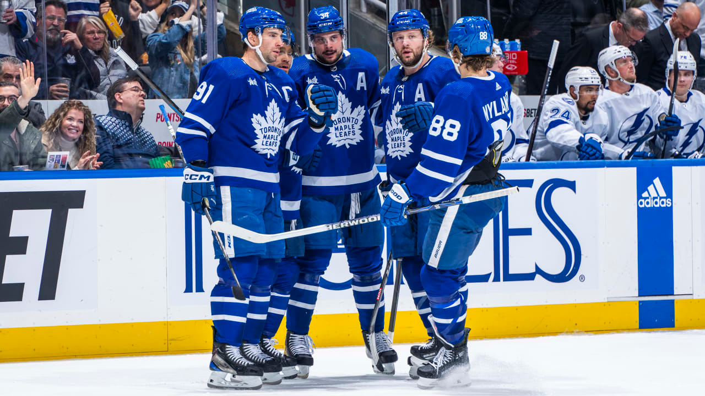
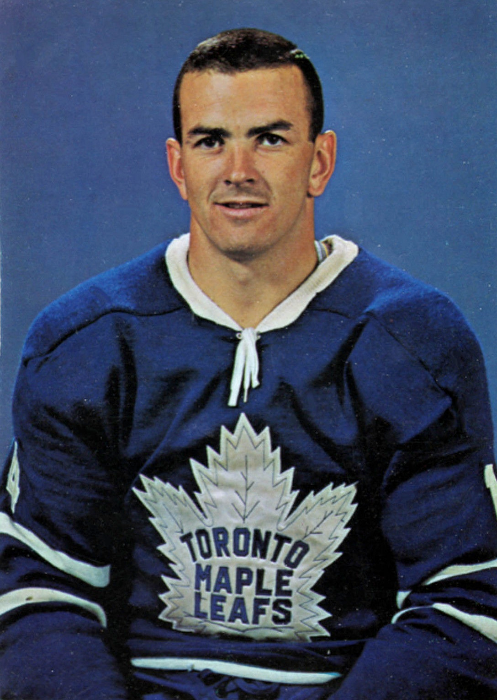
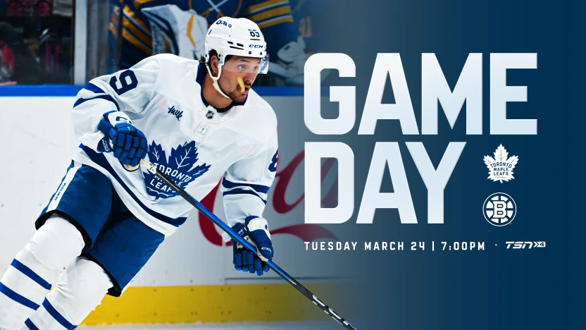
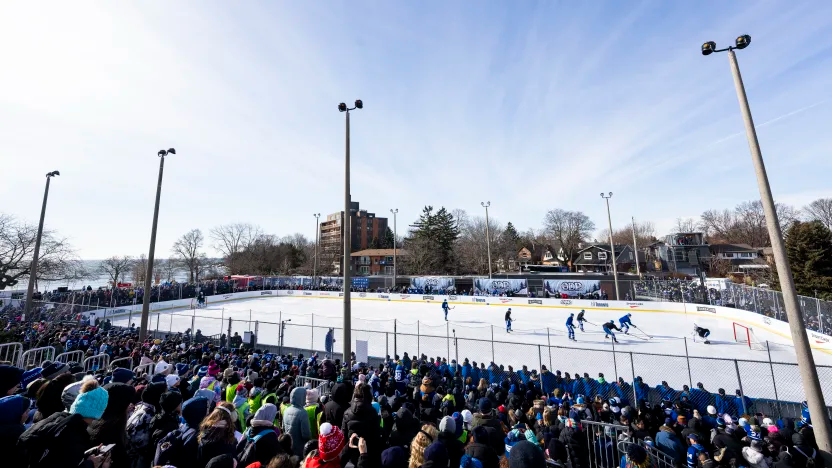
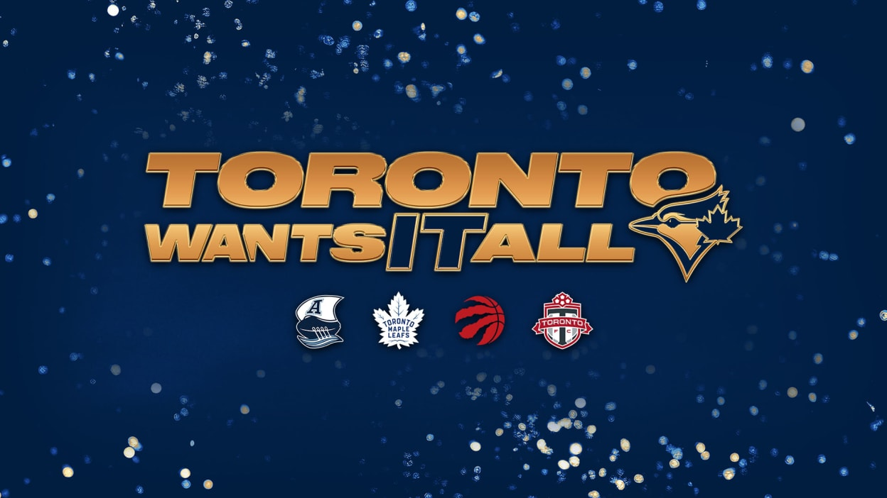

BEM VINDO AO
TORONTO MAPLE LEAFS
Nenhum time na NHL vive sob um microscópio tão grande quanto o Toronto Maple Leafs. Originalmente conhecidos como Toronto Arenas e depois St. Patricks, a franquia adotou a folha de bordo e as cores azul e branco em 1927. O time é o coração financeiro da liga e possui uma das bases de fãs mais leais (e sofridas) do mundo.
A história dos Leafs é dividida entre as eras de glória dos anos 40 e 60 e a "Maldição de 67". Desde então, o time se tornou sinônimo de talento individual absurdo que muitas vezes tropeça nos playoffs. A Scotiabank Arena é o palco onde cada jogo da temporada regular parece uma final de Copa do Mundo, e a pressão da mídia local é implacável.
Atualmente, o time é liderado por um dos maiores goleadores da história do esporte, Auston Matthews. Em 2026, os Leafs continuam focados em um estilo de jogo ultra-ofensivo, mas têm buscado reforçar a defesa com jogadores mais físicos para tentar, finalmente, quebrar a barreira da primeira rodada e trazer o desfile da vitória para as ruas de Toronto.
CONHEÇA OS
JOGADORES

Dave Keon
Central
1960–1975
AGENDA
25
28
30
2
4
8
NOTÍCIAS

DIA DE JOGO vs BOSTON - 24 de março de 2026

O Toronto Maple Leafs realizará um treino ao ar livre apresentado pela Sport Chek no Westway Outdoor Rink.
